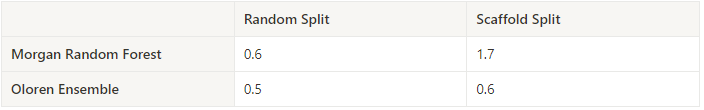

Introduction
The chemical space of potentially “drug-like,” pharmacologically active molecules is huge, estimated at 10^60. Evaluating even the restricted chemical space around a particular
molecular scaffold can be time and resource-intensive. Machine learning approaches aiming to learn relationships between molecules and the property in question can dramatically accelerate the screening
process by recognizing abstract and higher-order molecular characteristics in already screened molecules associated with their bioactivity. This allows for better selectivity in future experiments, giving researchers
information on which molecules are most and least likely to have the desired properties.
Figure 1. 3D Visualization of over 6000 DrugBank molecules across 5 different properties (Awale and Reymond 2016).¹
Models, however, are as good as the data they were trained on. An experienced dendrologist may be able to classify almost all known tree species in the world, and a paleontologist
could determine heaps of information from a dinosaur’s collarbone. Switch their roles and neither would have a clue at the task before them. ML models suffer from the same problem in cases where data they
encounter in wild, real-world use, differ fundamentally from the data they were trained on, leading potentially to inaccurate and misleading predictions.
Scaffolds
In the chemical space, this problem risks manifesting itself when a model is used to predict properties for molecules in an unfamiliar chemical space. For
example, medicinal chemists often center work around a molecular scaffold, a foundational molecular structure with desirable properties, testing variations with new R groups and sidechains.
Figure 2 depicts molecules alongside their Bemis-Murcko scaffold, a framework for determining scaffolds from molecules.
Figure 2. Example molecules from the BACE dataset (top row) and their scaffolds (bottom row).
If a model is trained only on molecules that belong to only a handful of scaffold classes, its ability to predict a molecule with an unfamiliar scaffold is unknown. This
blog post explains scaffold splitting, a method of splitting a molecular dataset to enable testing of how well models can predict foreign molecular structures.
Scaffold Split vs. Random Split
We use the BACE dataset of 1,513 inhibitors of human β-secretase 1 in our testing, and we’ll be using a regression model. With a naive split, the dataset is randomly divided into
a train subset and a test subset. This results in a similar distribution of features and properties across both sets, and is effective in testing model performance on familiar data. Figure 3 depicts this similarity.
To test model performance on unfamiliar data, we artificially split the dataset so that the test set differs from the train set.
Figure 3. PCA chemical space of train and test sets using random split. Red is train, blue is test.
Using Oloren AI’s OAM software suite, each molecule in the BACE dataset is grouped together by scaffold. The data is split into train and test sets such that the scaffolds in each group are as distant from the other as possible.
The result is that every single molecule in the test set has a scaffold unique from the train set, and is molecularly distant from the train set. The test set is engineered to be as foreign to the model as possible. Figure 4 shows almost no overlap between the train and test set after the scaffold split.
Figure 4. PCA chemical space of train and test sets using scaffold split. Red is train, blue is test.
Model Performance
With both data from the random split and scaffold split, we can begin testing model performance. We evaluate two models: a baseline Random Forest that uses molecular Morgan Fingerprints and a proprietary Oloren AI ensemble model.
Figure 5 plots model predictions of pIC50 inhibition affinity for each test molecule against the true experimental value. The dots are colored by their similarity to the train set, with higher numbers (red) being more similar and lower numbers (blue) less similar.
Morgan Random Forest
Oloren Ensemble

Morgan Random Forest
Oloren Ensemble
Figure 5. Model prediction values versus experimental values colored by similarity to the train set.

Table 1. Table 1. Root mean square error of models across splits.
For both models, prediction accuracy is worse under scaffold splitting, confirming the effectiveness of the split. We expect lower accuracy because the model has never seen these types of molecules before, unlike under the random split.
We observe that the baseline model performs poorly on the scaffold split data, with a root mean square error (RMSE) of more than 2.5 times that of the random split. The Oloren ensemble model performs only slightly worse than the random split, and its RMSE (0.64) is
almost equal to the baseline model’s RMSE on the random split (0.61). You’ll observe that with the Oloren ensemble model there are clusters of predicted values around 7.5 and below 7, indicating (A) that this model could be used to filter out molecule candidates with low bioactivity and
(B) that classification would be a more appropriate approach for this dataset. The concept of AI model translation to decision making during the drug discovery process and strategy for model design will be explored in future posts.
We can conclude that for the BACE dataset, Oloren’s ensemble model generalizes well to unfamiliar chemical spaces and provides superior performance relative to the baseline model.
Model generalizability is an important feature to have and understand during the ML-assisted drug screening process. A generalizable model will be able to predict with high confidence the properties of molecules it
has never seen before, reducing the need and pressure to perform extensive manual assays each time a new chemical class is to be tested. Generalizable models can predict across multiple different scaffolds and molecule types without prior screening,
while a non-generalizable model requires manual generation of data for a new molecule class if accurate predictions are desired.
References
[1] Awale, M., Reymond, JL. Web-based 3D-visualization of the DrugBank chemical space. J Cheminform 8, 25 (2016). https://doi.org/10.1186/s13321-016-0138-2